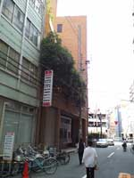

Consulate General of China in Osaka
Getting ready to head off to China on a business trip or holiday? Don't forget to apply for your visa well in advance. There are only two countries that I know of that don't need visas for short trips, Japan and Singapore. Everyone else needs one.
Here's how to get to the Chinese Consulate in Osaka and apply for a visa.
How to get there:
Consulate-General of the People's Republic of China in Osaka
3-9-2 Utsubohonmachi Nishi-ku, Osaka 550-0004
URL: http://osaka.china-consulate.org/
Phone: 06-6445-9481/9482
Fax: 06-6445-9475
This consulate covers Osaka, Kyoto, Nara, Wakayama, Shiga, Mie, Tokushima, Kagawa, Ehime, Kochi, Okayama, Tottori, Shimane, and Hiroshima.
Hours: 9AM - 12PM & 1:30PM - 2:30PM
Subway:
Take the Sennichimae Line (Pink) or Chuo Line (Green) to Awaza Station. Awaza is station C-15 on the Chuo Line or station S-13 on the Sennichimae Line.
Subway maps:
- Joho Maps - Great subway and train map in English and Japanese of Osaka with stations linked to Google Maps.
- Official Osaka Subway Map This is a PDF map of the Osaka subway in English
Map to the Consulate:
Get out of the subway at either Exit 3 or Exit 9. Exit 9 is the closest. You'll have to walk a little bit if you get out of Exit 3. From Exit 9 you make a 180° turn to the right and head toward the brownish orange brick building on the left side of the road. It's about 200 meters from Exit 9.

What to bring:
If you're going on business get an invitation letter from the company in Chinese inviting you to China. Tourists will need the name and address of the hotel(s) where they plan to stay.
Bring a copy of your passport as well as the actual passport. If you don't have a copy of the passport they have a copy machine in the waiting area that you can use.
Bring a copy of your Gaijin Card, front and back. Again, you can make copies of this there.
If you're going on business, a letter of proof of employment would be a good idea. This can be in Japanese.
Take a 3cm by 4cm photo of yourself. If you like they have a small photo booth machine in the waiting area.You can take your pictures there.
You will be given a 1 page form to fill out. The copy I received was in English and Chinese. It's just basic information about you and your trip to China. After filling this out bring the form and your documents/copies to Window #4. They will take your passport and give you a ticket stating when you can pick up your passport and Chinese visa. Mine took 4 days and cost ¥6000 for a single entry visa.There are longer, multiple-entry visas available as well. If you need a visa faster than that they also have a rush service for an extra ¥3000, and you can pick it up the next day.
That's it. Enjoy your trip to China.
Posted by Bill at September 16, 2006 11:52 AM
 del.icio.us |
del.icio.us |  Digg this |
Digg this |  Furl |
Furl |  StumbleUpon |
StumbleUpon |  Yahoo MyWeb |
Yahoo MyWeb |  Google
Google
Comments
Thanks! Exactly the information I was looking for! Im going to Shanghai next week!
Posted by: Henrik at December 28, 2006 1:55 AM
thanks for the info, stellar job.
This seems a kinda random site, I just found it through google, but its exactly what i needed. Photos of the building are a great idea.
no more stress for me.
cheers
Posted by: martyn at January 31, 2007 10:34 AM
Keep up the informative posting!
Posted by: Marc at May 9, 2007 5:31 PM
dude, you made my search easier than then making hotcakes, cheers
Posted by: juan at July 18, 2007 10:13 PM
Incredibly useful write-up! Thanks a bunch!!!
Posted by: ma at November 7, 2007 10:45 AM
A word to the wise: thanks to the lovely US Guvment raising visa fees for Chinese citizens wishing to visit the US, China has returned the favor. The fee for US citizens has been raised to ¥15,000!
Posted by: Chris at February 12, 2008 11:08 AM
cheerssss thankssssss , it is so helpfull
Posted by: dazz at February 19, 2008 5:00 PM
Don't delete my comment :'(. I do love you. You helped me a lot.
Posted by: Andrew at March 6, 2008 9:29 PM
Thanks! Merci beaucoup ! It's very helpful ^_^
Posted by: cassican at March 27, 2008 1:55 PM
Thanks so much! This information is incredibly useful - just what I was hoping to find. Glad to know my trip from Kyoto to Osaka won't be a wild goose chase now. :)
Posted by: Renee at March 27, 2008 10:09 PM
The information are clear and straight and glad that it is given in English. This made my job easy.
The visa fees is high. Cant help it.
Regds
Posted by: Jagdish Singh at April 15, 2008 9:31 AM
The information are clear and straight and glad that it is given in English. This made my job easy.
The visa fees is high. Cant help it.
Regds
Posted by: Jagdish Singh at April 15, 2008 9:31 AM
Nice info. One thing is needed for non japanese, re-entry permit from immigration office. And my travel agent requires me to provide certificate of deposit with the balance of more than 300.000 yen
Posted by: senior at July 16, 2008 5:20 PM
The Chinese Consulate now want evidence of flights/itinery and a fax/evidence/confirmation of what Hotel you are staying in and for how long.
Posted by: Mike at August 1, 2008 2:00 PM
BTW if you dive there is a Life supermarket nearby with free limited parking.
Heavy police prescence in the area,possibly due to Olympic Games?
Posted by: Mike at August 1, 2008 2:02 PM
The Chinese Consulate now want evidence of flights/itinery and a fax/evidence/confirmation of what Hotel you are staying in and for how long.
Also if you drive, there is a Life Supermarket nearby with free limited parking.
Very strong Police prescence near Consulate,possibly due to Olympic Games?
Posted by: Mike at August 1, 2008 2:04 PM
Thanks for the info. This is the exactly information that I need. Thanks for sharing.
I hope I can find the consulate tomorrow. Ofcourse, will be based on your direction.
Posted by: Rosi at August 28, 2008 4:04 PM
You saved my sanity and my life by posting this info! Thank you!
Posted by: Caroline at September 24, 2008 9:50 PM
Thank you so much.
I am going to get my visa to China on Monday... I leave on the 23rd! Your advice saved my sanity :P
Posted by: Nagako at December 10, 2008 11:04 PM
I'M JAPANESE N AT MOMENT I HAVE MULTIPLE VISA "F" VALID UNTIL 02/SEP/09. CAN I GET SAME STYLE OF VISA FOR 1-YEAR MULTIPL VISA EACH STAY 90-DAYS???
ACTUL I ASKED HONG KONG BUT THEY SAID CAN GET 3-MONTHS VISA ONLY UNTIL OCT NATIONAL HOLIDAY IN CHINA IS OVER.
Posted by: YUJI NAKAOKA at July 16, 2009 5:33 PM
Thanks for the great info
Posted by: Aaron at August 13, 2009 10:03 AM
To the Consulate General of China
I am a professor of law at McGill University, Montreal Canada, currently teaching as a visiting professor at the University of Kobe for two months. I have been invited to lecture at Shantou University on Friday/Saturday October 30. Before that I will be in HK for 2 days lecturing at the university there. Can I obtain my visa in HK on a same day basis or must I obtain it in Osaka?
Armand de Mestral C.M.
Professor of Law
Posted by: Armand de Mestral at October 14, 2009 1:14 PM
The next day service in Osaka was ¥3000 back in 2006 when I wrote this post. You may save yourself some time and hassle by getting everything straightened out in Japan before heading to HK and CN. I have no personal experience with the HK side of things. Who knows if they're even open on Saturday?
Some travel agencies will handle the visa application process for you. You may want to check with them as well.
Posted by: Bill  at October 14, 2009 5:04 PM
at October 14, 2009 5:04 PM
Thanks ALOT for this information.
Very useful indeed. Why can't the official site be as clear as this?
Cheers.
Posted by: an0n at December 1, 2009 10:51 PM
thank you for posting this, i have to go tomorrow and your detailed instructions have made my life easier.
Posted by: sara at December 9, 2009 8:24 PM
Fantastic information !! I have applied for a teaching job in Wuhan and am trying to read everything about China I can find.
Posted by: teacherinchina at March 22, 2010 9:16 AM
Great Info dude! Tks
Posted by: Carlos at April 19, 2010 12:21 AM
Thanks dude . You're rock . I don't know what to do if you don't post this information .
Why they never think like you!!!!!
Posted by: Dazzler at May 9, 2010 1:59 AM
Let me chime in. Great info.
Posted by: John in Kyoto at May 10, 2010 6:01 PM
Nice information, thanks a lot.
I will have to apply for chinese visa when I am in Japan.
Posted by: bus pictures at June 20, 2010 9:49 PM
Top notch!
Thanks buddy
:)
Posted by: Jump! at June 30, 2010 12:09 PM
Thank you so much for this info!
Posted by: americanmatador at April 12, 2011 9:59 AM
Thank you for helpful information.But have to sAY I was appalled to read so many comments by nearly illiterate English writers! Wonder what they are doing in Japan??!!
Posted by: E. King at April 19, 2011 7:02 PM
excellent , you are the one who saves my time , from the unclear information , thanks
Posted by: dazz at May 17, 2011 12:03 PM
I have a re-entry permit in my passport, but my brother is on his way to visit me and will only have a tourist visa for Japan. We intend taking the ferry to China from Kobe. Will he be able to get a visa for China in Osaka?
Posted by: Robin at October 2, 2011 2:26 PM
Thanks for all the great information. You saved me a lot of time and confusion.
I'll just add that when I went there yesterday, there weren't any English copies of the visa form out (you had to ask at the counter for one) and that they wanted a copy of my return flight details.
Posted by: Dave at January 26, 2012 6:40 PM
Post a comment
Thanks for signing in, . Now you can comment. (sign out)
(If you haven't left a comment here before, you may need to be approved by the site owner before your comment will appear. Until then, it won't appear on the entry. Thanks for waiting.)


{kind=link}
{kind=link}